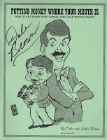

When should you start charging for your shows?
7/31/2010
By Dale Brown
There are some simple ways to gauge your progress as an entertainer and find out if you're really entitled to be rewarded for all your hard work. My formula for finding out if you should be getting paid for your talents is simple ... ask.
The most practical approach to evaluating your ability is to use your free shows to produce tangible evidence about your strengths as a vent, as well as your weakness. Let your audiences tell you what you're good at, and what you may need to improve on, before starting down the path as a professional.
Make a critique form (an example is shown in "Putting Money Where Your Mouth Is") and give to at least five people in the audience. Tell the people they do not have to sign their names. Arrange to have the forms turned in to someone other than yourself ... probably the person who asked you to perform. That will ensure that you don't know who says what, which will tend to generate more honest opinions. You'll want to ask about:
1) Voice contrast (was the ventriloquist's voice significantly different from the puppets?)
2. Entertainment value (Was the show entertaining?)
3. Technical skills (Did the ventriloquist's lips move? Was it easy to understand the ventriloquist and the puppets?)
4. Variety (Did the show offer variety and keep the audience's interest?)
5. Audience appropriateness (If it was a school show, was the program aimed at children, etc.?)
6. Audience participation.
7. Audience reaction.
8. Program length
9. Professionalism (how well did the performer handle himself/herself on stage?)
10. Would you pay to see this show?
Remember ... "It's what the audience thinks of your performance that's important. It's not what you think of your performance."
{kind=link}

* * * * * *
The above excerpt was condensed from chapter one of "Putting Money Where Your Mouth Is" (revised 2010) by Dale and Leslie Brown. Thanks to the author, we are today awarding one free signed copy of this book to Tiffany Cox. To order a copy of this book or more helpful booklets or Dale's DVD, visit http://www.dale-brown.com/